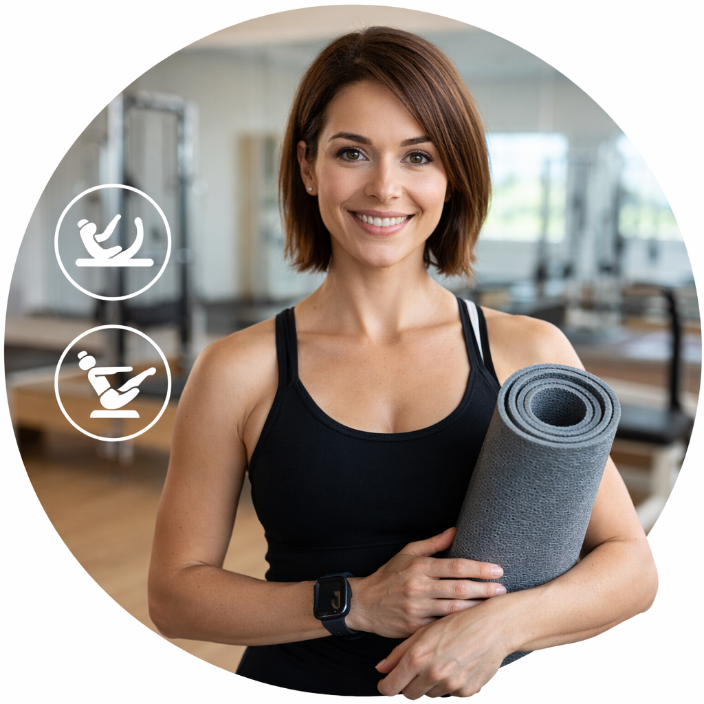

Willkommen bei Fit for Fink:
Pilates für Körper und Geist
Pilates ist ein ganzheitliches Trainingssystem, das Körper und Geist miteinander verbindet. Es wurde von Joseph Pilates entwickelt und zielt darauf ab, die Muskulatur zu stärken, die Beweglichkeit zu verbessern und die Körperhaltung zu fördern. Im Mittelpunkt stehen kontrollierte, fließende Bewegungen, die mit bewusster Atmung ausgeführt werden. Besonders trainiert wird die Körpermitte, auch „Core“ genannt, bestehend aus Bauch-, Rücken- und Beckenbodenmuskulatur. Pilates eignet sich für Menschen jeden Alters und Fitnesslevels und wird sowohl zur Prävention als auch zur Rehabilitation eingesetzt. Es steigert das Körperbewusstsein und unterstützt eine gesunde, aufrechte Haltung im Alltag.
Über mich:

Ich bin Manuela, zertifizierte Pilates- und Faszien-Trainerin mit Leidenschaft für Bewegung und Gesundheit. Lass uns gemeinsam deine Verwandlung starten, in ein gesünderes wohlfühlenes Leben.
Kurse:
Wo kannst du an meinen Kursen teilnehmen?
Kontakt:
Wenn Sie Fragen haben oder einen Termin vereinbaren möchten, kontaktieren Sie mich bitte über das
Kontaktformular.